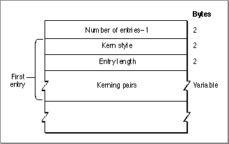
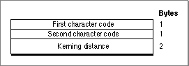

Legacy Document
Important: The information in this document is obsolete and should not be used for new development.
Important: The information in this document is obsolete and should not be used for new development.


The Font Family Kerning Table
The font family kerning table consists of a group of kerning subtable entries. Each subtable contains the measurements of a hypothetical 1-point font of this family with a different stylistic variation. The Font Manager multiplies these measurements by the requested font size. The structure of the font family kerning table is shown in Figure 4-29.Figure 4-29 The font family kerning table
 The font family kerning table is represented by the
KernTabledata type, which is shown on page 4-45. It consists of a count, followed by a variable number of kerning subtable entries.
Each kerning subtable entry is represented by the
- Number of entries. This is an integer value that specifies the number of kerning subtable entries in this table minus 1. This value is represented by the
numKernsfield of theKernTabledata type.
KernEntrydata type, which is described on page 4-45. Each subtable pertains to a specific style code and contains a variable number of kerning pair entries. The style code values are shown in Figure 4-23 on page 4-89. The elements of each subtable entry are as follows:
Each kerning pair entry specifies a kerning distance in pixels for a pair of glyphs. Each glyph is specified by its character code. The structure of the kerning pair entry is shown in Figure 4-30.
- Kern style. This is an integer value that specifies the style code to which the kerning information in the subtable pertains. This value is represented by the
kernStylefield of theKernEntrydata type.- Entry length. This is an integer value that specifies the number of bytes in this kerning subtable. This value is represented by the
kernLengthfield of theKernEntry
data type.
Figure 4-30 A kerning pair entry
 Each kerning pair entry is represented by the
KernPairdata type, which is shown on page 4-45. The elements of each entry are as follows:
- First character code. The one-byte character code of the first glyph of the kerning pair. This value is represented by the
kernFirstfield of theKernPairdata type.- Second character code. The one-byte character code of the second glyph of the kerning pair. This value is represented by the
kernSecondfield of theKernPairdata type.- Kerning distance. The kerning distance, in pixels, for the two glyphs at a point size of 1. This is a 16-bit fixed point value, with the integer part in the high-order 4 bits, and the fractional part in the low-order 12 bits. The Font Manager measures the distance in pixels and then multiplies it by the requested point size. This value is represented by the
kernWidthfield of theKernPairdata type.